Hands on QGIS
## Projections --- ### Geoid 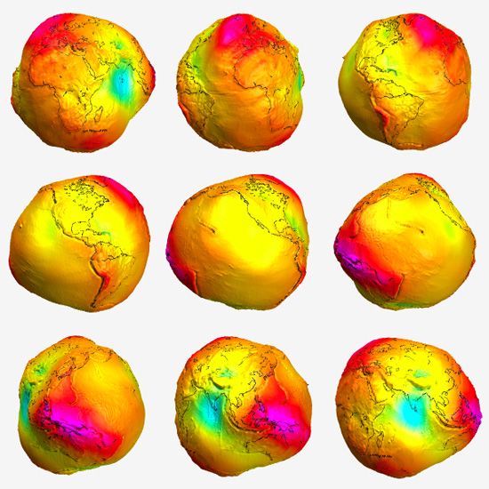 orange --- Ellipsoid 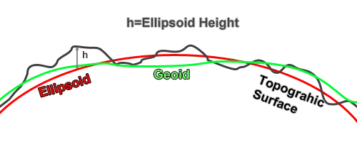 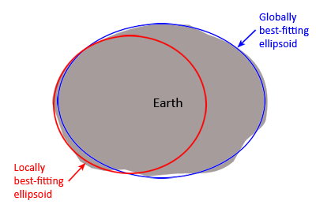
Projectiontypes
### Data models 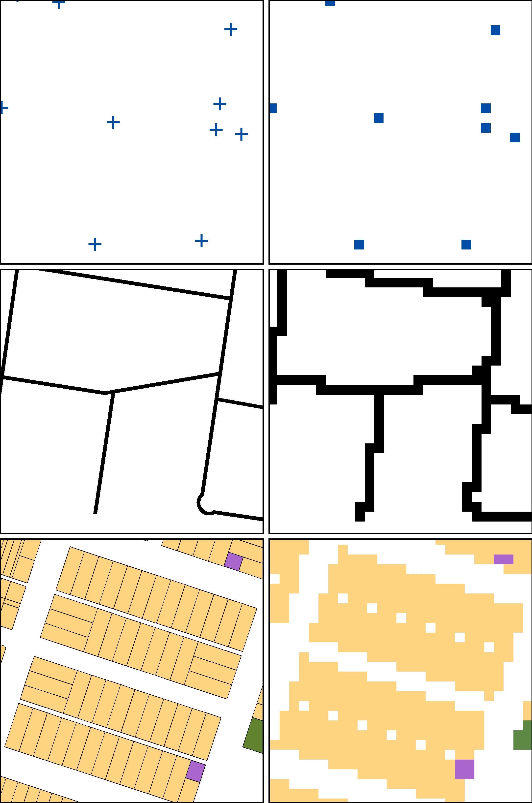 <img src="pics/data_models.png" height="auto%" width="28%" > <p style="color: grey; font-size: small;"> https://spatialvision.com.au/blog-raster-and-vector-data-in-gis/ <br> https://gsp.humboldt.edu/olm/Lessons/GIS/08%20Rasters/RasterToVector.html </p>
Points Lines ### Vector data Polygons
#### Vector attributes 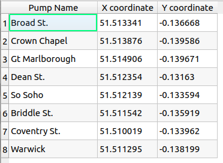 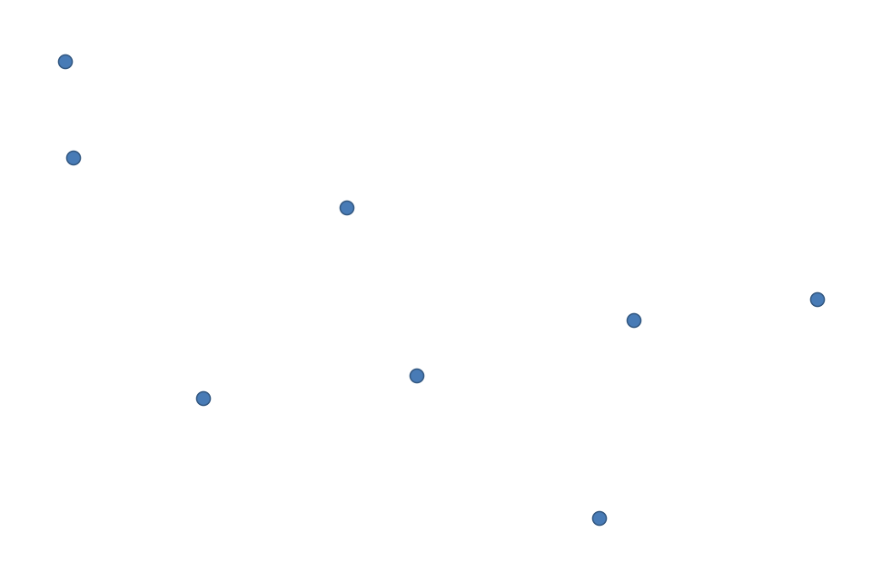
### Raster data 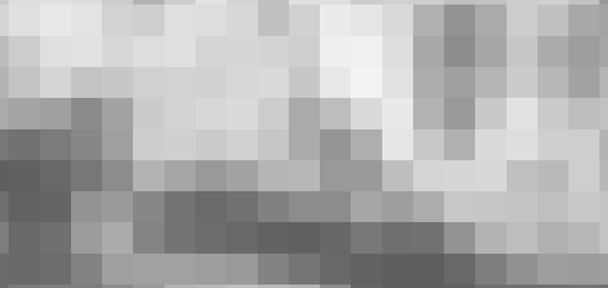 --- #### Raster values 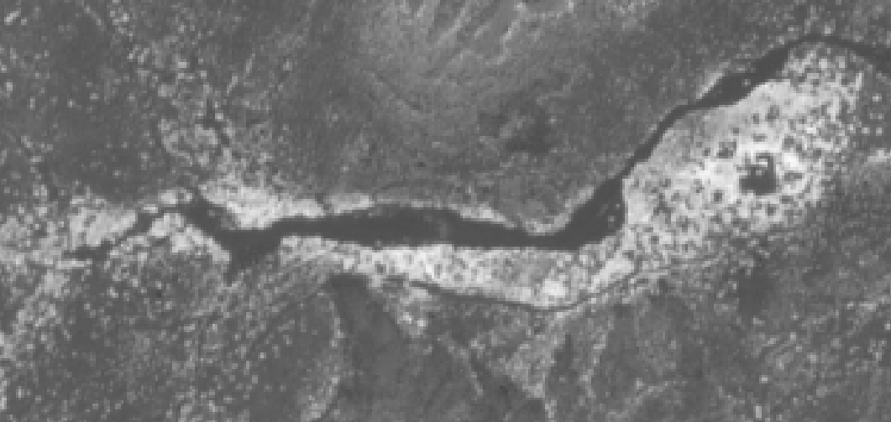 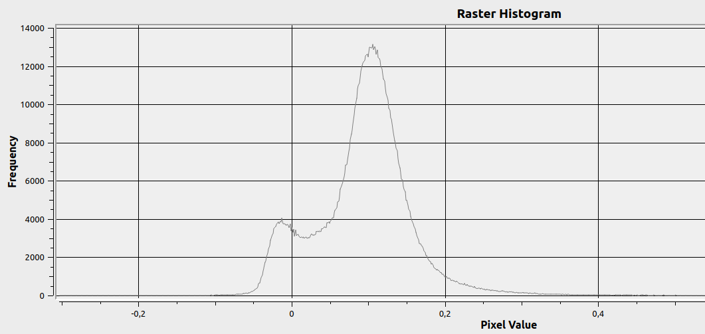 <img src="pics/raster_dataset.png" height="auto" width="19%"> --- #### Bands & Virtual raster 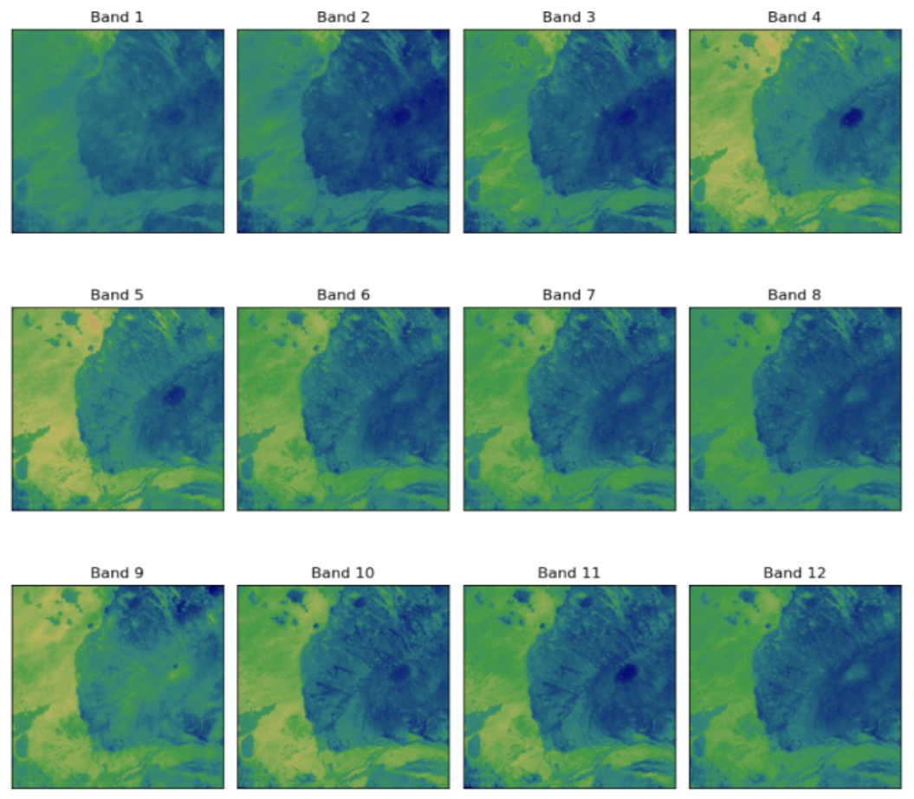 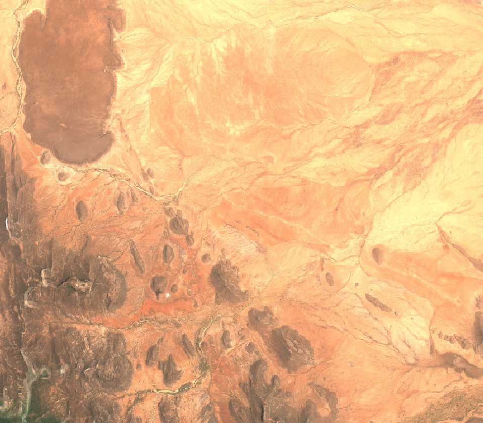 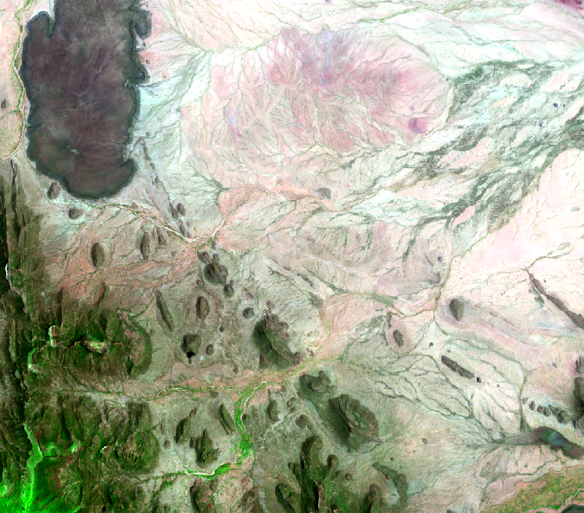 rgb image (natural colors) --> bands 4,3,2; agriculture (highlight dense vegetation and monitor the health of crops) --> bands 11,8,2
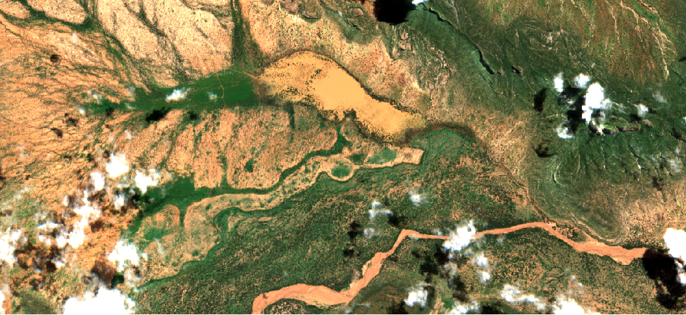 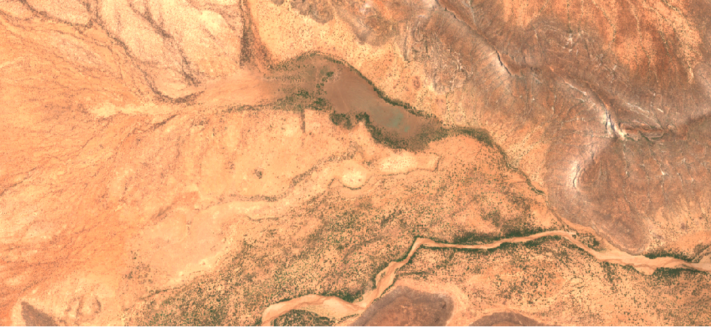
May 2023 vs October 2023
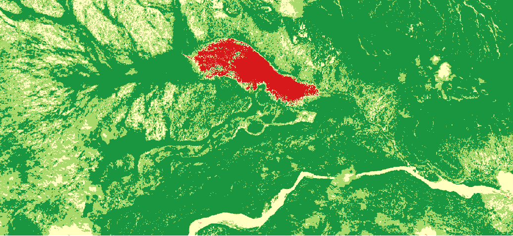 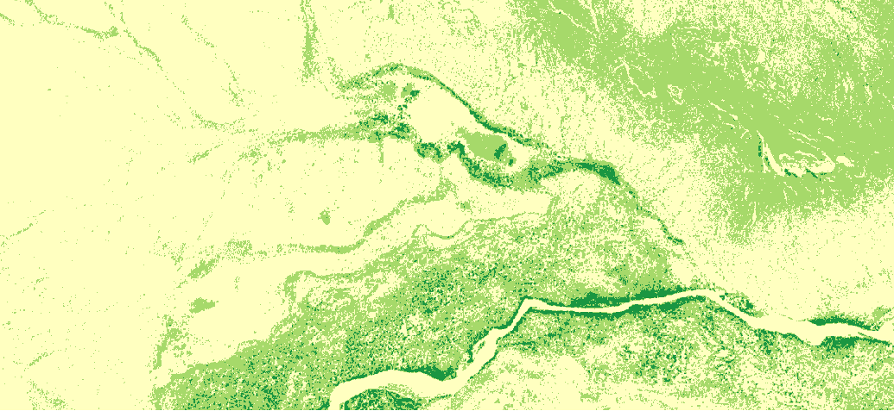